전기철도기사 (2003-08-10 기출문제)
1과목: 전기철도공학
1. AT 교류 전철변전소의 급전측 보호계전기가 아닌 것은?
- 거리계전기
- 단락선택계전기
- 부족전압계전기
- 브흐홀쯔계전기
(정답률: 알수없음)

2. 가공 전차선로에서 전차선 110mm2 의 허용장력이 1⑤9kgf이다. 이 가공 전차선로에서 전차선만 자동 장력 조정할 경우 전차선의 표준장력은 약 몇 kg 이 되겠는가?(단, 전차선 장력의 변화는 표준장력에 대하여 15%로 시설된다고 한다.)
- 800
- 850
- 900
- 950
(정답률: 알수없음)
3. 전식의 방지대책으로 적합하지 않은 것은?
- 회생제동방식을 채용한다.
- 레일의 m당 중량을 줄인다.
- 장대 레일을 사용한다.
- 보조 귀선을 설치한다.
(정답률: 알수없음)
4. 건널선 장치의 시설방법으로 적합한 것은?
- 팬터그래프가 트롤리선사이에 끼어 들 위험성이 있기때문에 주요 선의 트롤리선을 상부에 둔다.
- 팬터그래프를 통과할 때 트롤리선의 고저차가 있기때문에 트롤리선이 교차하는 위치에 교차금구를 설치하여서는 아니된다.
- 팬터그래프와 더블이어에 충격을 줄 수 있는 범위내에는 전차선의 접속을 금지하고 있다.
- 상호의 트롤리선이나 조가선이 순환전류로 손상되지 않도록 전기적으로 분리하여야 한다.
(정답률: 알수없음)
5. 3상 변압기의 병렬운전 조건에 해당되지 않는 것은?
- 각 상별 부하분담이 일정할 것
- 각 군의 임피던스가 그 용량에 반비례할 것
- 상회전 방향과 각변위가 같을 것
- 극성 및 1차, 2차의 정격전압이 같을 것
(정답률: 알수없음)
6. 교류 전철구간 전철변전소에서 3상을 2상으로 변환하는데 이용되는 변압기는?
- 흡상변압기
- 3권선 변압기
- 단권변압기
- 스코트결선 변압기
(정답률: 알수없음)
7. 단선의 염려가 없으며, 터널이나 지하철용으로 많이 사용되는 전차선의 가선방식은?
- 강체 가선방식
- 단선식 가선방식
- 복선식 가선방식
- 제3궤조식 가선방식
(정답률: 알수없음)
8. 40t의 전기차가 20‰의 경사를 올라가는데 필요한 견인력은 몇 kg 인가?(단, 1차 저항은 무시한다.)
- 200
- 400
- 800
- 1600
(정답률: 알수없음)
9. 전차선로에서 전류를 흐르게 하는 것이 주목적이 아닌것은?
- 전차선
- 조가선
- 급전선
- 부급전선
(정답률: 알수없음)
10. 전차선 110㎜2의 안전율은 2.2, 전차선의 파괴강도를 35㎏f/㎜2, 전차선의 허용장력을 1075kgf로 할 때 잔존 단면적은 몇 ㎜2인가?
- 13.96
- 30.71
- 67.57
- 135.14
(정답률: 알수없음)
11. 가공 전차선로에서 두 개의 금속의 상대 전위차로부터 알 수 있는 것은?
- 부식의 정도
- 부하의 정도
- 전력의 차이
- 전류의 차이
(정답률: 알수없음)
12. 전차선에 요구되는 특성으로 옳은 것은?
- 전류용량이 작을 것
- 집전율이 낮을 것
- 열전도도가 높을 것
- 가선 장력에 대하여 충분히 견딜 것
(정답률: 알수없음)
13. 교류 전철변전소 주변압기의 M상과 T상간의 위상차는 몇도인가?
- 30°
- 60°
- 90°
- 120°
(정답률: 알수없음)
14. 전기철도 교류 단권변압기 AT 급전방식의 특징으로 옳은 것은?
- 철도 변전소의 위치를 한전 변전소 근처로의 선정이 불가능하므로 송전선로의 건설비가 비싸다.
- 급전전압은 차량전압의 4배이다.
- 전압강하가 크므로 변전소 간격이 짧다.
- 흡상변압기 급전방식과 같은 섹션이 불필요하다.
(정답률: 알수없음)
15. 전차선로의 설치목적은?
- 변전소에서 전력을 공급받기 위하여
- 구분소에서 전력을 공급받기 위하여
- 역 중간에 전력을 공급하기 위하여
- 전기차에 전력을 공급하기 위하여
(정답률: 알수없음)
16. 교류 강체가선방식에서 커티너리 가선방식의 인류장치와 같은 역할을 하는 장치는?
- 고정점장치
- 제한점장치
- 건널선장치
- 흐름방지장치
(정답률: 알수없음)
17. 강체 가선방식의 편위 형태는?
- 지그재그의 형태
- 반원형의 형태
- 일직선의 형태
- 완만한 사인곡선의 형태
(정답률: 알수없음)
18. 전철 급전선로의 과부하전류나 지락, 단락 등으로부터 전기 시설물을 보호하기 위하여 등전위 접지망을 구성하는 방식은?
- 이중절연방식
- 매설 접지방식
- 가공보호선 방식
- 흡상선 보호방식
(정답률: 알수없음)
19. 기계적 구분개소에서는 조가선 상호 및 전차선과 조가선을 일괄하여 접속하는데 에어조인트 개소에서는 평행부분의 양단에서 조가선 상호 및 전차선과 조가선을 어떤 커넥터로 일괄하여 접속하는가?
- T-M 커넥터
- T-M-M-T 커넥터
- M-M 커넥터
- M-S-T 커넥터
(정답률: 알수없음)
20. 급전선으로 사용하는 경알루미늄연선을 경동연선과 동일한 저항값을 얻도록 하려면 경동연선의 약 몇 배의 굵기로 하여야 하는가?
- 1.1
- 1.3
- 1.6
- 1.9
(정답률: 알수없음)
2과목: 전기철도 구조물공학
21. 탄성한도내에서 응력과 변형율이 비례한다는 것은?
- 후크의 법칙
- 오일러의 정리
- 바리니온의 정리
- 라미의 정리
(정답률: 알수없음)
22. 단면적이 110㎜2인 트롤리선의 마모한도가 67.6mm, 잔존 지름이 7.5mm이고, 안전율이 2.2인 트롤리선의 허용인장력 T는 몇 kg 인가?(단, 단면적이 110㎜2인 트롤리선의 계산 단면적은 111.1㎜2이고, 저항력은 3900kg이다.)
- 1078
- 1126
- 8070
- 8500
(정답률: 알수없음)
23. 보(Beam)의 응력에서 전단응력의 특성이 아닌 것은?
- 전단응력은 일반적으로 중립축에서 최대이다.
- 휨모멘트는 0 이다.
- 상, 하단에서는 0 이다.
- 전단응력도는 곡선변화를 한다.
(정답률: 알수없음)
24. 조합철주에서 단경사재를 사용하는 경우의 수평면에 대한 경사 각도로 맞는 것은?
- 35˚
- 40˚
- 45˚
- 50˚
(정답률: 알수없음)
25. 일반적으로 각 전선에 부착되는 빙설의 양은 얼마가 된다고 보고 설계하는가?
- 가선된 각 전선 주위에 두께 12mm(비중 0.9)
- 가선된 각 전선 주위에 두께 9mm(비중 0.9)
- 가선된 각 전선 주위에 두께 6mm(비중 0.9)
- 가선된 각 전선 주위에 두께 3mm(비중 0.9)
(정답률: 알수없음)
26. 인류주 등 차막이 후방에 건식하는 전주는 몇 m 이격하여 건식하여야 하는가?
- 5
- 8
- 10
- 12
(정답률: 알수없음)
27. 전기철도에 사용하는 철강재의 부식방지를 위해 일반적으로 가장 많이 사용하는 아연도금 방법은?
- 전기아연도금
- 황산아연도금
- 용융아연도금
- 염화아연도금
(정답률: 알수없음)
28. 다음 설명 중 틀린 것은?
- 전차선의 인류지선은 전차선과 동일 방향이 되도록 시설한다.
- 전선의 인류용 밴드와 지선용 전주 밴드는 개별로 하는 것이 좋다.
- 인류개소의 볼트, 너트와 나사에 인장력이 가해지지 않도록 주의가 필요하다.
- 지선을 갖는 방향과 동일 방향에서 전주를 지지하는 전주를 지주라 한다.
(정답률: 알수없음)
29. 문형 빔 중 내하중이 가장 큰 것은?
- 평형 트러스빔
- 4각 농형빔
- V형 트러스라멘빔
- V형 트러스빔
(정답률: 알수없음)
30. 그림에서 두 힘 3t과 4t의 합력은 약 몇 t 인가?
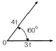
- 5
- 6
- 7
- 8
(정답률: 알수없음)
31. 가공전선로에서 이도(딥)를 D라 하면 전선의 길이는 경간 S보다 얼마나 길어지는가?
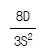
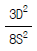
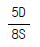
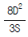
(정답률: 알수없음)
32. 전차선로용 강구조물 중 주기둥재의 세장비는 얼마 이하로 제한하는가?
- 150
- 200
- 220
- 250
(정답률: 알수없음)
33. 전철구조물인 철주 또는 비임 조립에 사용하는 볼트에서 너트를 체결한 후 남는 표준길이는 몇 mm 정도인가?
- 1∼4
- 5∼10
- 11∼15
- 16∼20
(정답률: 알수없음)
34. 전철 구조물에서 철주 등의 철구조물에 대한 특징이 아닌것은?
- 균질도가 높아 신뢰할 수 있다.
- 인성이 커서 변위에 대하여 잘 견디어 낸다.
- 압축력에 대하여 부재가 좌굴하기 쉽다.
- 정밀도가 높은 구조물을 얻을 수 있다.
(정답률: 알수없음)
35. 우력(짝힘)모멘트에 대한 설명으로 옳은 것은?
- 크기가 같고 방향이 같은 나란한 두 힘을 말한다.
- 크기가 같고 방향이 반대인 나란한 두 힘을 말한다.
- 크기가 다르고 방향이 같은 나란한 두 힘을 말한다.
- 크기가 다르고 방향이 반대인 나란한 두 힘을 말한다.
(정답률: 알수없음)
36. 직류 1500V의 알루미늄 T-BAR의 규격은 몇 mm2 인가?
- 1950
- 2000
- 2100
- 2350
(정답률: 알수없음)
37. 한 단면의 미소면적에서 임의로 설정한 직교 좌표축까지의 거리를 미소면적에 곱한 것과 전단면에 걸쳐서 적분한 것을 나타내는 것은?
- 1차 모멘트
- 2차 모멘트
- 좌표축의 회전
- 좌표축의 이동
(정답률: 알수없음)
38. 지표면에서의 높이가 9m인 단독 지지주에 25kgf/m의 수평 분포하중이 작용하는 경우, 지면과의 경계점 모멘트 M은 약 몇 kgf.m 인가?
- 253.5
- 507
- 1012.5
- 2025
(정답률: 알수없음)
39. 트롤리선의 마모를 관리할 때 주요한 개소로 볼 수 없는 곳은?
- 에어섹션, 부스타섹션, 에어조인트
- 역행개소의 급전분기 및 더블이어 등의 경점개소
- 전차선 교체개소에 있어서의 굴곡개소
- 전동차의 타행개소
(정답률: 알수없음)
40. 전차선로에서 지선의 종류로 틀린 것은?
- 단지선
- V지선
- 2단지선
- 삼각지선
(정답률: 알수없음)
3과목: 전기자기학
41. 단면적 S, 길이 ℓ , 투자율 μ인 자성체의 자기회로에 권선을 N회 감아서 Ｉ의 전류를 흐르게 할 때 자속은?
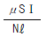
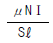
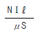
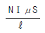
(정답률: 알수없음)
42. z방향으로 진행하는 평면파로 맞지 않는 것은?
- z성분이 0 이다.
- x의 미분계수(도함수)가 0 이다.
- y의 미분계수가 0 이다.
- z의 미분계수가 0 이다.
(정답률: 알수없음)
43. 반지름이 각각 r1[m], r2[m]이고 전위차가 V[V]인 동심 도체구가 있을 때 내구 표면의 전장의 세기의 최소치는 몇 V/m 인가?
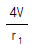
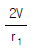
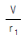
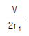
(정답률: 알수없음)
44. 진공 중에 있어서의 전자파의 속도(단위: m/s)가 아닌것은?
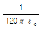
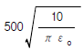
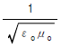
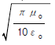
(정답률: 알수없음)
45. 영구자석의 재료로 적당한 것은?
- 잔류 자속밀도가 크고 보자력이 작아야 한다.
- 잔류 자속밀도가 작고 보자력이 커야 한다.
- 잔류 자속밀도와 보자력이 모두 작아야 한다.
- 잔류 자속밀도와 보자력이 모두 커야 한다.
(정답률: 알수없음)
46. W1과 W2의 에너지를 갖는 두 콘덴서를 병렬 연결한 경우의 총 에너지 W와의 관계로 옳은 것은?(단, W1≠W2 이다.)
- W1+W2 =W
- W1+W2 ＞W
- W1+W2 ＜W
- W1-W2=W
(정답률: 알수없음)
47. 반지름 a, b인 두 구상 도체 전극이 도전률 K인 매질속에 중심거리 r만큼 떨어져 놓여 있다. 양 전극간의 저항은?(단, r＞＞a, b 이다.)
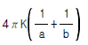
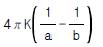
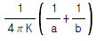
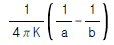
(정답률: 알수없음)
48. 전위함수에서 라플라스방정식을 만족하지 않는 것은?
- V=rcosθ+φ
- V=x2-y2+z2
- V=ρcosφ+z
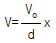
(정답률: 알수없음)
49. 단면적 s[m2], 단위 길이에 대한 권수가 n[회/m]인 무한히 긴 솔레노이드의 단위 길이당의 자기인덕턴스는 몇 H/m 인가?
- μsn
- μsn2
- μs2n2
- μs2n
(정답률: 알수없음)
50. 100회 감은 코일과 쇄교하는 자속이 1/10초 동안에 0.5Wb에서 0.3Wb로 감소했다. 이 때 유기되는 기전력은 몇 V인가?
- 20
- 80
- 200
- 800
(정답률: 알수없음)
51.
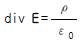
와 의미가 같은 식은? (단, E :전계, ρ:전하밀도, ε0 :진공의 유전률이다.)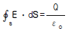
- E = -gard V
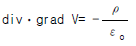
- div·grad V=0
(정답률: 알수없음)
52. 정전유도에 의해서 고립도체에 유기되는 전하는?
- 정전하만 유기되며, 도체는 등전위이다.
- 정,부 동량의 전하가 유기되며, 도체는 등전위이다.
- 부전하만 유기되며, 도체는 등전위가 아니다.
- 정,부 동량의 전하가 유기되며, 도체는 등전위가 아니다.
(정답률: 알수없음)
53. 공극을 가진 환상솔레노이드에서 총 권수 N회, 철심의 투자율 μ[H/m], 단면적 S[m2], 길이 ℓ [m]이고 공극의 길이가 δ[m]일 때 공극부에 자속밀도 B[Wb/m2]을 얻기 위해서는 몇 A 의 전류를 흘려야 하는가?
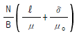
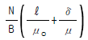
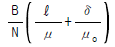
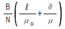
(정답률: 알수없음)
54. 폐곡면으로부터 나오는 유전속(dielectric flux)의 수가 N일 때 폐곡면내의 전하량은 얼마인가?
- N
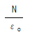
- εo N
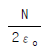
(정답률: 알수없음)
55. 액체 유전체를 포함한 콘덴서 용량이 C[F]인 것에 V[V]의 전압을 가했을 경우에 흐르는 누설전류는 몇 A 인가?(단, 유전체의 유전률은 ε , 고유저항은 ρ[牆.m]이다.)
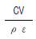
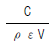
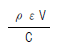
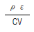
(정답률: 알수없음)
56. 대지의 고유저항이 ρ[Ω·m]일 때 반지름 a[m]인 반구형 접지전극의 접지저항은 몇 Ω 인가?
- 2πρa
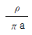
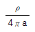
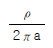
(정답률: 알수없음)
57. 무한히 넓은 도체 평면판에 면밀도 σ[C/m2]의 전하가 분포되어 있는 경우 전력선은 면(面)에 수직으로 나와 평행하게 발산한다. 이 평면의 전계의 세기는 몇 V/m인가?
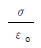
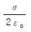
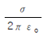
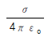
(정답률: 알수없음)
58. 평행 도선에 같은 크기의 왕복전류가 흐를 때 두 도선 사이에 작용하는 힘과 관계되는 것 중 옳은 것은?
- 간격의 제곱에 반비례한다.
- 간격의 제곱에 반비례하고, 투자율에 반비례한다.
- 전류의 제곱에 비례한다.
- 주위 매질의 투자율에 반비례한다.
(정답률: 알수없음)
59. 유전률 ε인 유전체를 넣은 무한장 동축 케이블의 중심 도체에 q[C/m]의 전하를 줄 때 중심축에서 r[m](내외반지름의 중간점)의 전속밀도는 몇 C/m2 인가?
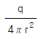
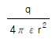
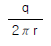
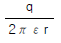
(정답률: 알수없음)
60. N회의 권선에 최대값 1V, 주파수 f[Hz]인 기전력을 유기 시키기 위한 쇄교자속의 최대값은 몇 Wb 인가?
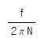
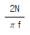
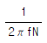
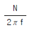
(정답률: 알수없음)
4과목: 전력공학
61. A, B 및 C상 전류를 각각 Ｉa, Ｉb및 Ｉc라 할 때 으로 표시되는 Ｉx는 어떤 전류인가?
- 정상전류
- 역상전류
- 영상전류
- 역상전류와 영상전류의 합
(정답률: 알수없음)
62. 인터록(interlock)에 대한 설명이 맞는 것은?
- 차단기가 닫혀 있어야 단로기를 닫을 수 있다.
- 차단기가 열려 있어야 단로기를 닫을 수 있다.
- 차단기와 단로기를 별도로 닫고, 열 수 있어야 한다.
- 조작자의 의중에 따라 개폐되어야 한다.
(정답률: 알수없음)
63. 옥내배선에 사용하는 전선의 굵기를 결정하는데 고려하지 않아도 되는 것은?
- 기계적 강도
- 전압강하
- 허용전류
- 절연저항
(정답률: 알수없음)
64. 배전계통에서 전력용 콘덴서를 설치하는 목적으로 다음중 가장 타당한 것은?
- 전력손실 감소
- 개폐기의 타단 능력 증대
- 고장시 영상전류 감소
- 변압기 손실 감소
(정답률: 알수없음)
65. 펠톤(Pelton)수차에 있어서 노즐로부터의 분출수의 속도를 v1, 버켓(bucket)의 주변속도를 u 라 할 때 이론상 수차의 효율이 최대로 되는 경우는?
(정답률: 알수없음)
66. 송전선로의 중성점을 접지시키는 목적은?
- 동량의 절감
- 송전용량의 증가
- 이상전압의 방지
- 전압강하의 감소
(정답률: 알수없음)
67. 개폐 서지 이상전압의 발생을 억제 할 목적으로 설치하는 것은?
- 단로기
- 차단기
- 리액터
- 개폐저항기
(정답률: 알수없음)
68. "전선의 단위길이내에서 연간에 손실되는 전력량에 대한 전기요금과 단위길이의 전선값에 대한 금리, 감가상각비 등의 년간 경비의 합계가 같게 되는 전선 단면적이 가장 경제적인 전선의 단면적이다." 이것은 누구의 법칙인가?
- 뉴크의 법칙
- 켈빈의 법칙
- 플레밍의 법칙
- 스틸의 법칙
(정답률: 알수없음)
69. 송전계통의 한 부분이 그림에서와 같이 Y-Y로 3상 변압기가 결선되고 1차측은 비접지로 2차측은 접지로 되어 있을 경우 영상전류는?
- 1차측 선로에만 흐를 수 있다.
- 2차측 선로에만 흐를 수 있다.
- 1차 및 2차측 선로에 모두 다 흐를 수 있다.
- 1차 및 2차측 선로에 모두 다 흐를 수 없다.
(정답률: 알수없음)
70. 원자로의 냉각재가 갖추어야 할 조건으로 틀린 것은?
- 열용량이 작을 것
- 중성자의 흡수 단면적이 작을 것
- 냉각재와 접촉하는 재료를 부식하지 않을 것
- 중성자의 흡수 단면적이 큰 불순물을 포함하지 않을 것
(정답률: 알수없음)
71. 직렬축전기를 선로에 삽입할 때의 이점이 아닌 것은?
- 선로의 인덕턴스를 보상한다.
- 수전단의 전압변동률을 줄인다.
- 정태안정도를 증가한다.
- 역률을 개선한다.
(정답률: 알수없음)
72. 전력손실이 없는 송전선로에서 서지파(진행파)가 진행하는 속도는 어떻게 표시되는가? (단, L: 단위선로 길이당 인덕턴스, C: 단위선로 길이당 커패시턴스이다.)
(정답률: 알수없음)
73. 500kVA의 단상변압기 3대를 사용해서 △결선에 의하여 급전하고 있는 경우 1대의 변압기가 고장나 이것을 제거시키고 V결선으로 운전할 때, 이 때의 부하가 1000kVA라면 나머지 2대의 변압기는 약 몇 % 의 과부하가 되는가?
- 115
- 120
- 125
- 130
(정답률: 알수없음)
74. 그림과 같은 계통에서 송전선의 S점에 3상 단락고장이 발생하였다면 고장전력은 약 몇 MVA 인가?(단, 발전기 G1, G2의 %과도리액턴스 및 변압기의 %리액턴스는 각각 자기용량기준으로 25%, 25%, 10%이고 변압기에서 S점까지의 %리액턴스는 100MVA기준으로 5%라고 한다.)
- 82
- 133
- 154
- 250
(정답률: 알수없음)
75. 발전 전력량 E[kWh], 연료 소비량 W[kg], 연료의 발열량 C[kcal/kg]인 화력발전소의 열효율 η[%]는?
(정답률: 알수없음)
76. 직류 송전방식에 대한 설명으로 틀린 것은?
- 케이블 송전일 경우 유전손이 없기 때문에 교류방식보다 유리하다.
- 선로의 절연이 교류방식보다 용이하다.
- 리액턴스 또는 위상각에 대해서 고려할 필요가 없다.
- 비동기 연계가 불가능하므로 주파수가 다른 계통간의 연계가 불가능하다.
(정답률: 알수없음)
77. 배전방식에서 루프계통에 대한 설명으로 옳은 것은?
- 일반적으로 배전변압기나 2차변전소에 대하여 1개의 공급회로를 가지고 있다.
- 계전방식이 비교적 간단하다.
- 공급의 계속성은 없으나 증설이 용이하며, 초기 설비비가 저렴하다.
- 전압 변동률이 방사상계통보다 좋고 부하를 균등히 할 수 있다.
(정답률: 알수없음)
78. 그림과 같은 회로에서 송전단의 전압 및 역률 E1, cosθ1, 수전단의 전압 및 역률 E2, cosθ2일 때 전류 Ｉ는?
(정답률: 알수없음)
79. 6.6㎸, 60Hz, 3상3선식 비접지식에서 선로의 길이가 10km이고 1선의 대지정전용량이 0.0⑤㎌/km일 때 1선 지락시의 고장전류 Ｉg[A]의 범위로 옳은 것은?
- Ｉg ＜ 1
- I ≤ Ｉg ＜ 2
- 2 ≤ Ｉg ＜ 3
- 3 ≤ Ｉg ＜ 4
(정답률: 알수없음)
80. 배전용 변전소의 주변압기로 주로 사용되는 것은?
- 단권변압기
- 삼권선변압기
- 체강변압기
- 체승변압기
(정답률: 알수없음)